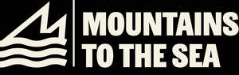

Trade Mark Journal No.2025/031 1 August 2025
UK00004237206 21 July 2025 (18,22,25,41)

- Class 18
- Hiking rucksacks; Hiking poles; Hiking bags; Hiking sticks; Trekking sticks; Camping bags; Mountaineering sticks; Sticks (Mountaineering -); Folding walking sticks; Walking sticks; Rucksacks for mountaineers.
- Class 22
- Tents for mountaineering or camping; Tents for mountaineering; Ropes for mountaineering; Mountaineering ropes; Camping swags; Tents for camping; Camping tents; Tents [not for camping]; Climbing ropes.
- Class 25
- Sports jerseys and breeches for sports; Footwear for sports; Sports footwear; Sports jerseys; Clothing for sports; Sports clothing; Sports shoes; Sports jackets; Sports shirts; Sports wear; Sports socks; Sports vests; Clothes for sports; Boots for sports; Sports garments; Sports bibs; Sports caps; Sports pants; Sports overuniforms; Footwear not for sports; Articles of sports clothing; Footwear for sport; Footwear for use in sport; Moisture-wicking sports bras; Sports clothing [other than golf gloves]; Sports over uniforms; Moisture-wicking sports shirts; Hiking boots; Hiking shoes; Trekking boots; Climbing boots [mountaineering boots]; Climbing boots; Mountaineering shoes; Mountaineering boots; Walking boots; Climbing footwear; Walking shoes; Jogging shoes; Walking shorts; Jogging pants; Walking breeches; Mountaineering gloves; Jogging bottoms [clothing]; Jogging bottoms; Jogging tops; Jogging outfits; Beach footwear; Gym boots; Beach shoes; Jogging suits; Leisure footwear; Jogging sets [clothing].
- Class 41
- Organising of sports and sports events; Sports and fitness; Sports activities; Sports coaching; Organising of sports competitions and sports events; Organising of sports events and of sports competitions; Sports training; Training in sports; Education, entertainment and sports; Tuition in sports; Sports tuition; Instruction in sports; Sports coaching services; Recreational services relating to hiking; Conducting guided climbing tours; Conducting guided walking tours; Recreational services relating to back-packing; Tuition in recreational pursuits; Sporting and recreational activities.
Mountains To The Sea Limited